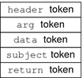

System Administration Guide: Security Services
|
|||
|
1. Security Services (Overview) Part II System, File, and Device Security 2. Managing Machine Security (Overview) 3. Controlling Access to Systems (Tasks) 4. Virus Scanning Service (Tasks) 5. Controlling Access to Devices (Tasks) 6. Using the Basic Audit Reporting Tool (Tasks) 7. Controlling Access to Files (Tasks) Part III Roles, Rights Profiles, and Privileges 8. Using Roles and Privileges (Overview) 9. Using Role-Based Access Control (Tasks) 10. Role-Based Access Control (Reference) Part IV Solaris Cryptographic Services 13. Solaris Cryptographic Framework (Overview) 14. Solaris Cryptographic Framework (Tasks) 15. Solaris Key Management Framework Part V Authentication Services and Secure Communication 16. Using Authentication Services (Tasks) 19. Using Solaris Secure Shell (Tasks) 20. Solaris Secure Shell (Reference) 21. Introduction to the Kerberos Service 22. Planning for the Kerberos Service 23. Configuring the Kerberos Service (Tasks) 24. Kerberos Error Messages and Troubleshooting 25. Administering Kerberos Principals and Policies (Tasks) 26. Using Kerberos Applications (Tasks) 27. The Kerberos Service (Reference) 28. Solaris Auditing (Overview) 29. Planning for Solaris Auditing 30. Managing Solaris Auditing (Tasks) 31. Solaris Auditing (Reference) Files Used in the Auditing Service Rights Profiles for Administering Auditing |
Audit Record StructureAn audit record is a sequence of audit tokens. Each audit token contains event information such as user ID, time, and date. A header token begins an audit record, and an optional trailer token concludes the record. Other audit tokens contain information relevant to the audit event. The following figure shows a typical audit record. Figure 31-3 Typical Audit Record StructureAudit Record AnalysisAudit record analysis involves postselecting records from the audit trail. You can use one of two approaches to parsing the binary data that was collected.
|
||
|